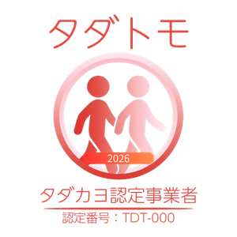
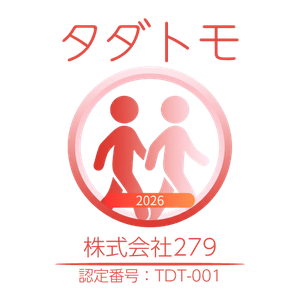
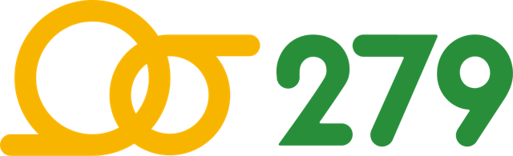
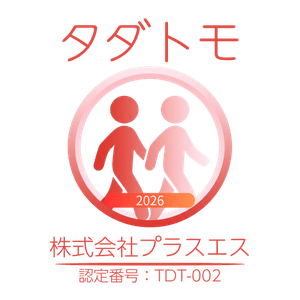
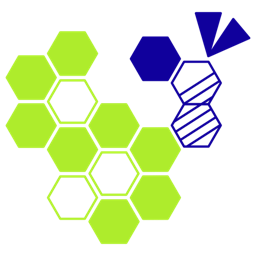
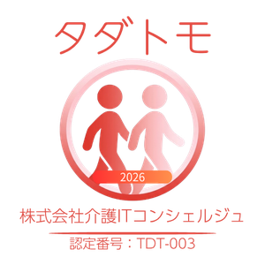
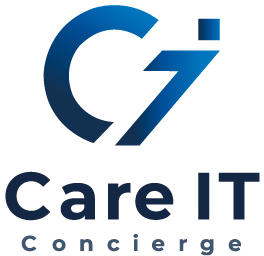

NPO法人タダカヨの
介護情報基盤伴走支援。
助成金活用で自己負担¥0
NPO法人タダカヨが、介護情報基盤への対応をまるごと伴走。
カードリーダー導入・アプリ設定・助成金申請まで、一緒に進めます。

厚生労働省の説明会「ケアプランデータ連携システムの介護WEBサービスへの移行について」
令和9年1月を目途に、ケアプランデータ連携システム（ケアプー）が「介護保険資格確認等WEBサービス（介護WEBサービス）」へ統合されます。 その内容について、国が説明会を行いました。説明会は終了しましたが、アーカイブ動画でいつでもご覧いただけます（事前申込は不要です）。
| 開催日 | 2026/08/26（水） 令和8年8月26日 13:30〜14:30 ※ライブ配信は終了しました。以下のリンクからアーカイブをご覧いただけます |
|---|---|
| 視聴方法 | YouTube（事前申込不要・無料） |
| 対象 | 居宅介護支援事業所、居宅サービス事業所、地域包括支援センターの職員 |
| 主催 | 厚生労働省 老健局 |
| アーカイブ | 公開中。ご都合がつかなかった方も、あとからご覧いただけます |
| 引っ越し準備期間 | 2026年（令和8年）7月〜12月 ※統合は2027年（令和9年）1月（予定） |
説明会で扱われる主な内容
- 移行後はブラウザで使えます。専用ソフトのインストールは不要になります
- 介護WEBサービスへの利用登録が必要です。登録は6つのステップで、数分で終わります。
お手元に、電子請求受付システムの ID（KJから始まる12桁）・パスワード・登録済みのメールアドレス をご用意ください - 市町村の対応状況を待つ必要はありません。お住まいの自治体の準備状況にかかわらず、事業所側の対応が必要です
- 移行後は利用料の負担がなくなります（現行のケアプーは年額21,000円。令和8年度中はフリーパスキャンペーンで無料）
- 加算の取扱いについては、追って国から案内される予定です
説明会資料：厚生労働省 老健局「ケアプランデータ連携システムの統合と介護情報基盤（介護保険資格確認等WEBサービス）について」（令和8年8月・42ページ）
根拠となる通知：介護保険最新情報 Vol.1529（令和8年7月29日 事務連絡）「ケアプランデータ連携システムの介護保険資格確認等WEBサービスへの移行について」
国へのお問い合わせ：介護情報基盤ポータルのお問い合わせフォーム（24時間受付）
登録の手順や準備するものは、タダカヨの伴走支援でも一緒に確認できます。ご不明な点はお気軽にご相談ください。
2026年4月から変わったこと
マイナンバーカードで介護保険の資格確認ができる仕組みが始まりました。 対応するには、カードリーダーの導入が必要です。
マイナ資格確認が始まった
これまで紙や証明書で確認していた介護保険の資格確認が、 マイナンバーカードのICチップで即座に行えるようになりました。 書類の転記ミスや確認の手間が大幅に減ります。
カードリーダーが必要
マイナ資格確認のためには、ICカードを読み取れるカードリーダーと 「マイナ資格確認アプリ」のセットアップが必要です。 機種選定から設定まで、慣れない方も多いのが現状です。
タダカヨの伴走支援なら自己負担¥0
カードリーダー代と設定サポート費は、 国の「介護情報基盤 助成金」の対象です。 タダカヨの「介護情報基盤伴走支援」は 助成金の上限内に収まるよう設計されており、 訪問・通所系なら自己負担¥0で整います。
さらに2027年1月、ケアプランデータ連携システムも統合されます（4分の動画で解説）

2027年1月、
ケアプランデータ連携
システムが
介護情報基盤に統合されます
ケアプランデータ連携システム（愛称：ケアプー）は、2027年1月に国の全国統一インフラ 「介護情報基盤」へ引っ越します。何が変わるのか、いま何を準備すればよいのかを、 約4分の動画でご説明します。システムを使ったことがない方でもわかる内容です。
プライバシー配慮のため、再生ボタンを押すまでYouTubeへの通信は行いません。 YouTubeで見る
この動画でわかること
- 2027年1月に統合され、ケアプーの画面・入口が変わります
- 統合後は利用料が無料になる方針です
- ログインはワンタイムパスワード方式に。実際の画面でご説明します
- いまのうちに準備しておく4つのことをお伝えします
気になるところから見る
※正式な手順は2026年8月26日の国の説明会で発表予定のため、内容は変わる可能性があります。
2027年1月に向けた準備も、いま入れるカードリーダーの選び方から一緒に考えます。
無料で相談するなぜタダカヨのサポートで自己負担¥0になるのか
介護事業所が活用できる補助金プログラムはいくつかありますが、 本サービスは最も有利な枠に最適化されています。
補助金プログラム比較と、本サービスが¥0になる仕組み
「介護情報基盤 助成金」は定額型で、最も有利な構造
介護事業所向けの「介護情報基盤 助成金」は、 補助率の定めがなく上限額まで実費全額を助成する「定額型」です。 （※医療機関は補助率1/2〜3/4と異なる）。 これに対し「介護テクノロジー導入支援事業（ICT補助金）」は 最大3/4補助の割合型で、同額の費用に対して助成額が少なくなります。
カードリーダー費＋サポート費の両方が対象（①②合算）
この助成金は「①カードリーダー購入経費」と 「②介護情報基盤との接続サポート等経費」の合計で上限額を設定しています。 本サービスの内訳（機器代＋サポート費）は まさにこの①②の構成と完全に一致します。
本サービスは助成金上限ぴったりに設計されています
本サービスでは、カードリーダー定価＋伴走支援費に「特別割引（出精値引き）」を組み合わせ、 合計金額が助成金上限（訪問・通所系3台の場合¥64,000・税込）にぴったり収まるよう 設計されています。よって自己負担は¥0になります。 詳細なお見積もりは 見積書作成ツール から作成いただけます。
| 比較項目 | 介護情報基盤 助成金（本命） | ICT補助金（比較） |
|---|---|---|
| 補助の種類 | 定額型（上限まで全額） | 割合型（最大3/4） |
| サポート費の対象 | ○（①②合算で明示） | △（カードリーダー対象外の可能性） |
| 本サービス税込¥64,000への助成額 | ¥64,000（全額） | ¥48,000（3/4換算） |
| 自己負担 | ¥0 | 差額が発生 |
あなたの実質負担
（サポート料金 − 助成金 ＝ ¥0）
＋アプリ設定・申請サポート
＋1年間の伴走サポート付き
サービス種別ごとの助成上限一覧
同一事業所で複数サービスを提供している場合は、 各種別の上限を合算できます。
| サービス種別 | 対象台数 | 助成上限額（税込） | 本サービスとの相性 |
|---|---|---|---|
|
訪問・通所・短期滞在系
訪問介護
訪問入浴介護
訪問看護
訪問リハビリ
通所介護
通所リハビリ
短期入所生活介護
短期入所療養介護（老健）
短期入所療養介護（病院）
短期入所療養介護（医療院）
居宅介護支援
小規模多機能型居宅介護
小規模多機能型居宅介護（短期利用）
夜間対応型訪問介護
認知症対応型通所介護
定期巡回・随時対応型訪問介護看護
看護小規模多機能型居宅介護
看護小規模多機能型居宅介護（短期利用）
居宅療養管理指導
地域密着型通所介護
|
3台まで | ¥64,000 |
BT（CIR415A）×3台
USB（CIR315A）×3台
どちらも自己負担¥0
合計＝助成上限／自己負担¥0
|
|
居住・入所系
介護老人福祉施設（特養）
介護老人保健施設（老健）
介護医療院
認知症対応型共同生活介護（グループホーム）
認知症対応型共同生活介護（短期利用）
特定施設入居者生活介護
特定施設入居者生活介護（短期利用）
地域密着型特定施設入居者生活介護
地域密着型特定施設入居者生活介護（短期利用）
地域密着型介護福祉施設
特定入所者介護サービス等
|
2台まで | ¥55,000 |
BT（CIR415A）×2台
USB（CIR315A）×2台
どちらも自己負担¥0
合計＝助成上限／自己負担¥0
|
|
その他
福祉用具貸与
特定福祉用具販売
住宅改修
市町村特別給付
|
1台まで | ¥42,000 |
BT（CIR415A）×1台
USB（CIR315A）×1台
どちらも自己負担¥0
合計＝助成上限／自己負担¥0
|
⚠️ 分類に注意するサービス（直感と違うもの）：
居宅介護支援
ケアマネ事業所は 訪問・通所系（¥64,000） に分類されます
居宅療養管理指導
名称は「居住系」に見えますが 訪問・通所系（¥64,000・3台） に分類されます
地域密着型通所介護
「地域密着型」ですが 訪問・通所系（¥64,000・3台） に分類されます
介護予防サービスの取扱い： 介護予防サービス（要支援者向け）のみを実施している事業所は、対応する介護サービスに読み替えて申請可能です。
合算のポイント：
訪問介護と通所介護を同一事業所で提供している場合、¥64,000＋¥64,000＝最大¥128,000が助成対象になります。
複数サービス提供事業所の方は、ぜひご相談ください。
申請期間：2026年5月7日〜2027年3月12日 | 申請先：介護情報基盤ポータル（国民健康保険中央会）
自分の事業所はどのパターン？ ― そのままご相談ください
事業所に合った構成を相談するマイナ資格確認に対応したカードリーダー
iPhone・Androidスマホ、タブレットに対応。 マイナ資格確認アプリと組み合わせてすぐに使えます。

AB Circle CIR415A
Bluetooth + USB Type-C 接続モデル
メーカー公式販売店価格
本サービスでは特別価格にてご提供 → 助成上限内に
- マイナ資格確認アプリ向け唯一の認定モデル
- Bluetooth ＋ USB Type-C のデュアル接続対応
- iPhone / Android スマホ・タブレット対応
- 持ち運びやすいコンパクト設計
- 2025年6月〜スマホへのマイナ格納に対応

AB Circle CIR315A
USB接続モデル（Type-A / Type-C）
メーカー公式販売店価格
本サービスでは特別価格にてご提供 → 助成上限内に
- USB Type-A（-02）/ Type-C（-04）を選択可
- PC・タブレットへの有線接続で安定動作
- マイナ資格確認アプリ対応
- コスト重視のスタンダードモデル
- 光と音でカード検知をお知らせ

台数構成・接続方式・既存環境に合わせてお見積もりをご案内します
NPO法人タダカヨの
介護情報基盤伴走支援
助成金の対象経費（①カードリーダー代＋②サポート費）を1パッケージに。 NPO法人タダカヨが伴走するから、訪問・通所系なら自己負担¥0です。
タダカヨの介護情報基盤伴走支援
NPO法人タダカヨによる伴走サポート ― カードリーダー導入＋設定＋助成金申請＋1年間サポートをまるごとパック
パック内訳（訪問・通所系 / Bluetooth 3台 標準モデル）
※ メーカー公式販売店価格 ¥17,380/台 のところを、本サービスでは特別価格でご提供
助成金上限¥64,000ぴったりに設計
助成金を使った場合の自己負担（訪問・通所・短期滞在系 / 3台）
実質の自己負担
カードリーダー3台＋タダカヨ1年間サポート込みで
※助成金の上限額には消費税分（10%）が含まれます。 お見積もりは 見積書作成ツール から作成いただけます。
パックに含まれるサポート内容
カードリーダー接続確認
機器のペアリングと動作確認
マイナ資格確認アプリ設定
インストールと初期設定
介護DX証明書インストール
クライアント証明書の設定
ポータルアカウント作成
介護情報基盤ポータル設定
助成金申請サポート
書類準備と申請方法のご案内
1年間の伴走サポート
チャット・メール・電話で対応
訪問・通所・施設・居宅介護支援など、どのサービス種別でもご相談ください
その他のプラン（サービス種別に合わせてご相談ください）
居住・入所系（2台構成）
CIR415A × 2台
合計 ¥55,000（税込）
自己負担：¥0
助成金上限 ¥55,000 にぴったり調整
その他（1台構成）
CIR415A × 1台
合計 ¥42,000（税込）
自己負担：¥0
助成金上限 ¥42,000 にぴったり調整
ご相談から導入完了まで、6つのステップ
お問い合わせいただいてから、機器の設定・助成金申請・入金確認まで、 タダカヨがずっと伴走します。
無料相談（フォームから約3分）
下のフォームからサービス種別と台数の希望をお知らせください。 2営業日以内にタダカヨのスタッフからご連絡し、 事業所に合った構成と助成金の見込み額をご案内します。
お見積り・お申し込み
構成が決まったらお見積書をお渡しします（見積書作成ツールでもその場で作成できます）。 内容にご納得いただけたらお申し込みください。
事前確認・日程調整
セットアップ当日に必要なID・パスワード類（電子請求受付システムのID等）が お手元に揃っているかを事前に一緒に確認します。 足りないものがあれば再発行の手順からご案内するので、当日に「進められない」がありません。
カードリーダーお届け＋セットアップ（90〜120分）
カードリーダーをお届けし、マイナ資格確認アプリの設定・ 介護情報基盤ポータルの初回登録までを一緒に進めます。 初回セットアップと助成金申請を合わせて90〜120分が目安です。
助成金申請サポート
領収書をもとに、介護情報基盤ポータルからのオンライン申請を一緒に行います。 お支払いは伴走支援後か前払いかをお選びいただけ、前払いの場合は伴走支援の終了時に その場で申請サポートまでお受けいただけます。 助成金は申請月の翌月に審査、翌々月に指定口座へ振込されます（後払い精算）。
1年間の伴走サポート
導入して終わりではありません。振込の確認から日々の運用の困りごとまで、 チャット・メール・電話で1年間サポートします。
タダカヨの伴走支援が選ばれる理由
「タダでカイゴをヨクしよう」を掲げるNPO法人タダカヨだから、 介護現場に寄り添った伴走ができます。
非営利・中立な立場
NPO法人として製品の販売利益に依存しない立場から、 事業所に最適な方法をご提案します。
介護DX専門の知識
介護現場のICT化・DX推進を専門にしてきたタダカヨが、 現場に合わせた丁寧なサポートをします。
1年間の伴走サポート
導入して終わりではありません。困ったときに いつでも相談できる環境を1年間維持します。
助成金申請もサポート
申請書類の準備から提出方法まで一緒に進めます。 補助金手続きが初めての方も大丈夫です。

紹介チラシ（PDF）を配布できます
介護情報基盤の伴走支援を1枚にまとめた紹介チラシです。事業所さまへの回覧・掲示・配布にご自由にお使いください。
画像をクリックしてもダウンロードできます（PDF・約1.7MB）
疑問にお答えします

マイナンバーカードをお持ちでない利用者の方は、引き続き介護保険証（被保険者証）でのご対応が可能です。 カードリーダーはマイナ資格確認に対応した際に使用するもので、 すべての利用者に必須というわけではありません。安心してご導入ください。
はい、合算できます。同一事業所で複数のサービスを提供している場合は、 サービス種別ごとの助成限度額を合算することができます。 訪問介護＋通所介護の場合は¥64,000＋¥64,000＝最大¥128,000が助成対象になります。 詳しくは介護情報基盤ポータル（国保中央会）でご確認いただくか、タダカヨへご相談ください。
スマートフォンやタブレットをメインで使う場合はBluetoothモデル（CIR415A）がおすすめです。 ケーブル不要で持ち運びやすく、訪問先での利用にも適しています。 PCや固定端末に接続する場合はUSB接続モデル（CIR315A）が安定していてコスト面でも有利です。 どちらにするか迷う場合はお気軽にご相談ください。
本サービスには助成金の申請サポートが含まれています。 必要な書類の準備や申請方法のご案内を一緒に進めますので、 初めての方でも安心してお任せください。 申請は介護情報基盤ポータル（国保中央会）でオンライン申請となります。
はい、別々の制度です。「介護テクノロジー導入支援事業（ICT補助金）」は都道府県を通じた 補助率型（最大3/4）の補助金で、介護ソフトやタブレット等が対象です。 「介護情報基盤 助成金」は国保中央会ポータルを通じた定額型の助成金で、 カードリーダーと接続サポート費が対象です。 カードリーダー導入には「介護情報基盤 助成金」の方が有利ですので、タダカヨではこちらを活用したプランをご提案しています。
お支払いは、伴走支援後のお支払いか前払いかをお選びいただけます。 前払いの場合は、伴走支援の終了時に助成金申請のサポートをその場でお受けいただけます（申請には領収書が必要なためです）。 助成金は申請月の翌月に審査、翌々月に指定口座へ振り込まれます（後払い精算）。 例えば7月に申請すると、8月に審査、9月末までに入金という流れです。 入金までの流れも含めてタダカヨがサポートします。
ご相談は全国から受け付けています。 地域や状況に応じて、NPO法人タダカヨまたはタダカヨ認定事業者がサポートを担当します。 まずはお気軽にお問い合わせください。お住まいの地域での対応方法をご案内します。
セットアップ当日は、機器の設定・ポータルの初回登録・助成金申請まで合わせて90〜120分が目安です。 事前にID・パスワード類の確認を一緒に済ませておくので、当日スムーズに進められます。 食事・入浴介助などの繁忙時間帯を避けて日程を調整しますので、現場の負担はほとんどありません。
はい、いま進めていただいて問題ありません。2027年1月の統合で変わるのは ケアプランデータ連携システムの入口（ログイン方法）と利用料で、 統合後は利用料が無料になる方針が示されています。 マイナ資格確認のためのカードリーダーは統合後も同じものを使い続けられますので、 買い替えの心配はありません。むしろ助成金の受付期間中に整えておくほうが有利です。 統合で何が変わるのかは約4分の解説動画でご確認いただけます。 （正式な手順は2026年8月26日の国の説明会で発表予定です）
タダカヨ認定事業者「タダトモ」
ITをうまく使って、現場に余裕をつくっている事業者を、タダカヨが「認定事業者」としてご紹介しています。

マークの見本
「タダカヨ認定事業者」——愛称「タダトモ」は、自分たちの現場でITを使いこなし、 その経験を近くの事業所にも分けている事業者です。 カードリーダーの供給や介護情報基盤の導入支援を、タダカヨと一緒に担っています。 「うちの地域で相談できる先は？」というときは、まずこの中から近い事業者をご覧ください。 認定事業者は今後も増えていく予定で、このページで順にご紹介します。 ※ これはタダカヨ独自の認定です。国（厚生労働省）が介護情報基盤ポータルに掲載している「介護事業所向け導入支援事業者」とは別のものです。

株式会社279
つなぐ手ケアマネセンター
北海道・札幌市

株式会社プラスエス
QCC大阪（住環境整備・福祉用具）
大阪府・八尾市

株式会社介護ITコンシェルジュ
介護現場に寄り添い、IT・DXの定着を支援する
滋賀県・大津市（滋賀・京都を中心に全国対応）
認定事業者「タダトモ」は今後も増えていきます。認定にご興味のある事業者さまも、お気軽にご相談ください。
介護情報基盤伴走支援を相談する
「うちの事業所は何台必要？」「本当に自己負担¥0になる？」
どんな疑問でも、NPO法人タダカヨのスタッフが丁寧にお答えします。